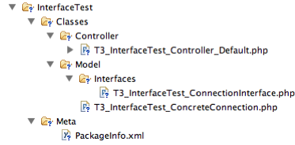

Bug #363
Order of includes (not possible to implement a interface in subfolder?)
| Status: | Rejected | Start date: | 2008-02-24 | |
|---|---|---|---|---|
| Priority: | Should have | Due date: | ||
| Assigned To: | Robert Lemke | % Done: | 0% |
|
| Category: | Object | |||
| Target version: | - | Estimated time: | 0.00 hour | |
| PHP Version: | Complexity: | |||
| Has patch: | Affected Flow version: |
Description
I have the following:
Classes/T3_XQuery_ExpressionInterface.php (=Interface)
Classes/MonetDB/T3_XQuery_MonetDBExpression (=a implementation)
I get the Exeption:
"Interface T3_XQuery_ExpressionInterface does not exist..
ReflectionException thrown in file
Packages/FLOW3/Classes/Component/T3_FLOW3_Component_Manager.php in line 336."
When i move the implementation also in Folder "Classes" it works.
So is there a way to resolve this dependencies automatic? E.g. autodetection of Interfaces (by name?) and include interfaces before implementations?
{kind=link}
History
#1 Updated by Daniel Poetzinger over 7 years ago
Sorry Folder Structure was actual a bit diffrent:
Classes/Model/ (Interfaces)
Classes/Model/MonetDB/ (Implementation of the interfaces)
I only got it working with all Interfaces and Classes in Folder "Classes" direct.
#2 Updated by Malte Jansen over 7 years ago
The structure must look like this:
MyPackage/Classes/T3_MyPackage_ExpressionInterface.php MyPackage/Classes/MonetDB/T3_MyPackage_MonetDB_MonetDBExpression (=a implementation)
An interface-name must end with 'Interface'.
An abstract-name must start with 'Abstract' in the last component (e.g. T3_MyPackage_AbstractSomeName).
A common filename (or class-/interface-/abstract-name):
MyPackage/Classes/MySubfolder1/MySubfolder2/.../T3_MyPackage_MySubfolder1_MySubfolder2_..._MyClassname.php MyPackage/Classes/MySubfolder1/MySubfolder2/.../T3_MyPackage_MySubfolder1_MySubfolder2_..._MyNameInterface.php MyPackage/Classes/MySubfolder1/MySubfolder2/.../T3_MyPackage_MySubfolder1_MySubfolder2_..._AbstractMyBaseClass.php
All Classes with this structure will be autoloaded.
#3 Updated by Daniel Poetzinger over 7 years ago
Thanks, but the Interface ends with "Interface" in this case allready.
I tried the Folderstructure you explained but without success. It only works for me if all Implementations and Interfaces are within the same folder.
#4 Updated by Robert Lemke over 7 years ago
- Status changed from New to Needs Feedback
- Assigned To set to Robert Lemke
Hi Daniel,
thank you for your report.
Can you attach a small package (as .zip file) with the minimum amount of files it takes to reproduce that problem? And if you get that exception again - can you also save the html output and attach it as well?
Thanks!
#5 Updated by Robert Lemke over 7 years ago
- Category changed from Reflection to Object
#6 Updated by Robert Lemke over 7 years ago
Hi Daniel,
I tried to reproduce your problem but had no success so far.
Can you please create a little package with the minimum of code you need to reproduce the problem on your machine and attach that package as .zip to this ticket?
Please also report the steps you take to reproduce the problem.
#7 Updated by Daniel Poetzinger over 7 years ago
- File InterfaceTest.zip added
I hope this helps.
- you just need to unzip taht package and the index.php breaks with:
"Interface T3_InterfaceTest_ConnectionInterface does not exist "
- You just need to move the classes in the folder Model to the folder Classes and it works.
Greetings
#8 Updated by Robert Lemke about 7 years ago
- File InterfaceTestFileStructure.png added
- Status changed from Needs Feedback to Rejected
- Estimated time set to 0.00
Daniel,
I checked the package you attached to this ticket, the file structure looks like in the screenshot:

The problem is that the class loader can't load your file "T3_InterfaceTest_ConnectionInterface.php" because it doesn't follow the naming conventions: Either you have to put it directly into the "Classes/" directory of your package or rename the file to "T3_InterfaceTest_Interfaces_ConnectionInterface.php".
If you try this with a recent version of FLOW3 please note that the prefix T3 has changed to F3. And I don't recommend putting your interface into their own directory.
robert